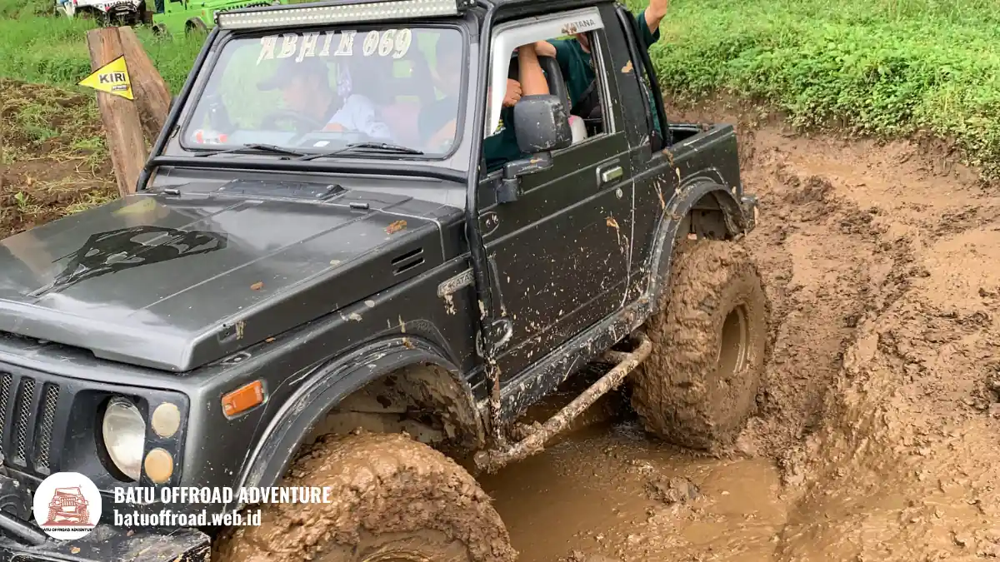

Pilih Waktu Offroad Coban Talun Better Pagi, Siang atau Sore
Waktu offroad Coban Talun terbaik bergantung pada tujuan Anda: pagi biasanya lebih sejuk, siang cenderung terang untuk foto, dan sore menghadirkan suasana hangat. Cuaca di Kota Batu, Malang Raya, dapat berubah, jadi konfirmasi jadwal ke Batu Offroad Adventure sebelum berangkat.
Poin Utama Artikel:
- Tidak ada satu jam yang paling cocok untuk semua orang.
- Pagi umumnya lebih sejuk dan cocok untuk peserta yang menyukai udara segar.
- Siang cenderung terang sehingga mendukung foto dan video.
- Sore memberi suasana hangat, tetapi udara dapat terasa lebih dingin saat matahari turun.
- Jam pasti dan ketersediaan harus dikonfirmasi kepada operator.
Suasana Offroad Pagi Hari
Suasana offroad pagi hari di Coban Talun umumnya sejuk dan tenang, dengan udara pegunungan Kota Batu yang segar serta lalu lintas wisatawan yang biasanya lebih sedikit. Pagi cocok bagi peserta yang tidak suka panas dan ingin memulai hari dengan aktivitas aktif. Jaket tipis sering berguna karena suhu dataran tinggi dapat terasa dingin di awal hari.
Apakah Pagi Lebih Sejuk untuk Offroad?
Ya, pagi umumnya lebih sejuk karena Kota Batu berada di dataran tinggi dan matahari belum tinggi. Kondisi aktual tetap bergantung pada cuaca hari itu. Udara sejuk membuat perjalanan terasa nyaman, terutama bagi peserta yang mudah kepanasan. Kabut tipis dapat muncul pada hari tertentu dan memberi suasana khas pegunungan.
Siapa yang Cocok Memilih Jam Pagi?
Jam pagi cocok untuk keluarga dengan anak, peserta yang tidak tahan panas, dan rombongan yang ingin punya waktu luang setelah offroad untuk wisata lain di Malang Raya. Memulai lebih awal memberi fleksibilitas jadwal. Namun, peserta perlu mengatur waktu perjalanan dari penginapan agar tiba di basecamp sesuai jadwal.
Suasana Offroad Siang Hari
Suasana offroad siang hari di Coban Talun umumnya terang dan hangat, sehingga jalur, pemandangan, dan ekspresi peserta tampak jelas di foto maupun video. Siang cocok bagi yang memprioritaskan dokumentasi. Namun, paparan matahari dapat terasa lebih kuat, sehingga topi, kacamata, dan air minum menjadi perlengkapan penting.

Jeep hitam melintasi kubangan lumpur yang dalam di jalur Coban Talun Batu
Bagaimana Pencahayaan untuk Foto di Siang Hari?
Pencahayaan siang umumnya terang dan merata sehingga detail jalur dan pemandangan tampak jelas, tetapi bayangan bisa keras dan pantulan matahari dapat menyilaukan. Untuk hasil foto yang baik, hindari menghadap langsung ke matahari dan manfaatkan area teduh saat berhenti di titik istirahat. Jaga ponsel dari debu dan guncangan.
Apa yang Perlu Diperhatikan Saat Offroad di Siang Hari?
Yang perlu diperhatikan saat siang adalah paparan matahari, kebutuhan cairan, dan perlindungan kulit. Bawa air minum, topi, dan tabir surya sesuai kebutuhan. Kondisi jalur pada siang hari dapat lebih kering, tetapi cuaca dataran tinggi bisa berubah. Tanyakan prakiraan terbaru kepada operator sebelum berangkat.
Suasana Offroad Sore Hari
Suasana offroad sore hari di Coban Talun umumnya hangat dan tenang, dengan cahaya lebih lembut yang memberi kesan sinematik pada pemandangan Kota Batu. Sore menarik bagi peserta yang mencari suasana santai dan cahaya foto yang lembut. Namun, waktu di jalur perlu diatur agar tidak terlalu dekat dengan gelap, demi keselamatan.
Perlu Jaket Saat Sore?
Ya, sebaiknya bawa jaket saat sore karena udara di dataran tinggi Kota Batu dapat cepat terasa dingin ketika matahari mulai turun atau cuaca berawan. Jaket tipis yang mudah dibawa sudah cukup bagi kebanyakan orang. Peserta yang sensitif terhadap dingin dapat menambahkan lapisan pakaian dan penutup leher.
Apakah Sore Cocok untuk Rombongan dengan Anak?
Sore dapat cocok untuk rombongan dengan anak selama waktu perjalanan tidak terlalu larut dan anak tidak kelelahan. Tanyakan batas jam kegiatan kepada operator. Perhatikan kondisi anak dan cuaca. Bila mendung atau hujan, operator dapat menyarankan penyesuaian jadwal demi kenyamanan dan keselamatan.
Cara Memilih Jam Sesuai Tujuan
Cara memilih jam offroad adalah menyesuaikannya dengan tujuan utama: pagi untuk kesejukan, siang untuk foto terang, sore untuk suasana hangat, lalu konfirmasi ketersediaan ke operator. Tentukan dulu prioritas rombongan Anda. Setelah itu, cocokkan dengan jam yang tersedia dan kondisi cuaca. Jika tujuan Anda lebih dari satu, pilih jam yang paling mendekati kompromi terbaik.
Kapan Jam Terbaik Offroad di Coban Talun?
Tidak ada jam yang terbaik untuk semua orang. Pagi cocok untuk kesejukan, siang untuk foto terang, dan sore untuk suasana hangat dengan jaket. Pilihan terbaik adalah yang sesuai kebutuhan rombongan dan didukung cuaca hari itu. Konfirmasikan jam ke Batu Offroad Adventure agar jadwal dan ketersediaan jeep sesuai.
Bagaimana dengan Cuaca dan Musim Hujan?
Cuaca dan musim hujan dapat mempengaruhi kondisi jalur. Saat hujan, tanah umumnya lebih licin dan operator dapat menyesuaikan jadwal atau rute demi keselamatan. Periksa prakiraan cuaca dan hubungi operator sebelum berangkat. Siapkan pakaian ganti serta pelindung barang elektronik bila berpotensi hujan.
Kesimpulan
Memilih waktu offroad Coban Talun berarti menyesuaikan jam dengan tujuan rombongan. Pagi menawarkan kesejukan, siang mendukung foto yang terang, dan sore menghadirkan suasana hangat yang perlu dilengkapi jaket. Selalu konfirmasi jam, cuaca, dan ketersediaan kepada operator. Ingin merasakan serunya langsung? Hubungi Batu Offroad Adventure di 0812-3398-9707 untuk info paket dan booking.
FAQ Offroad Coban Talun
-
Kapan jam terbaik offroad di Coban Talun?
Tidak ada jam terbaik yang mutlak. Pilih pagi untuk kesejukan, siang untuk foto terang, atau sore untuk suasana hangat, dan konfirmasikan ke operator. -
Apakah pagi lebih sejuk?
Ya, pagi umumnya lebih sejuk karena Kota Batu berada di dataran tinggi dan matahari belum tinggi. Kondisi tetap bergantung pada cuaca hari itu. -
Perlu jaket saat sore?
Ya, sebaiknya bawa jaket tipis karena udara di dataran tinggi Kota Batu dapat cepat terasa dingin saat matahari turun atau cuaca berawan.